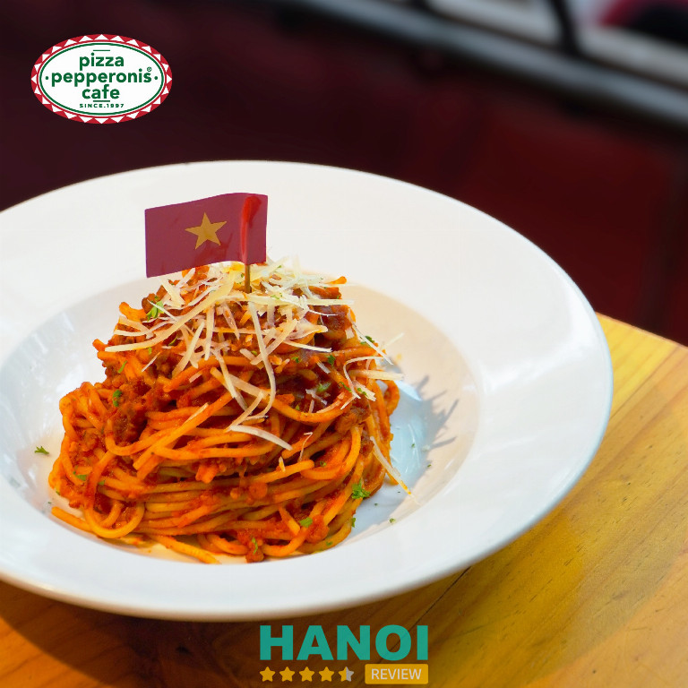
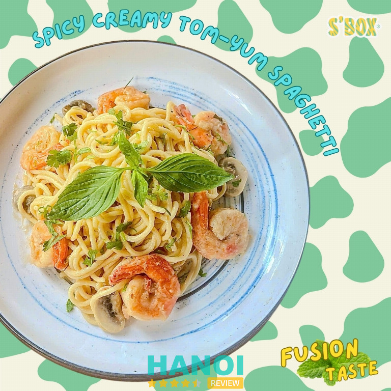
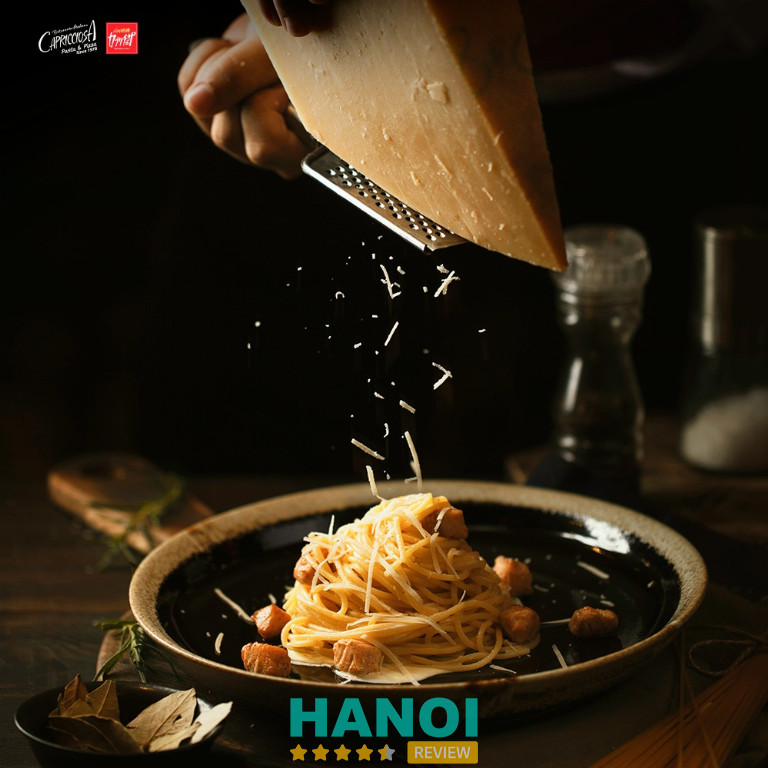
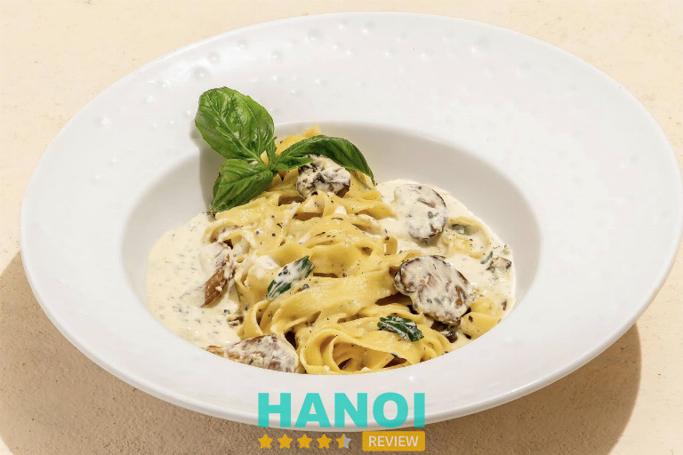
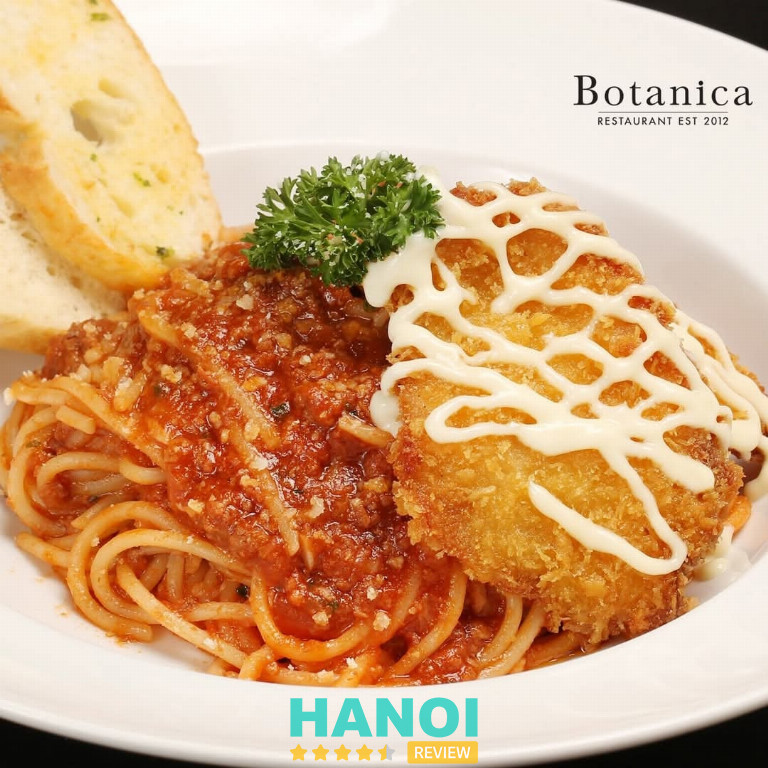
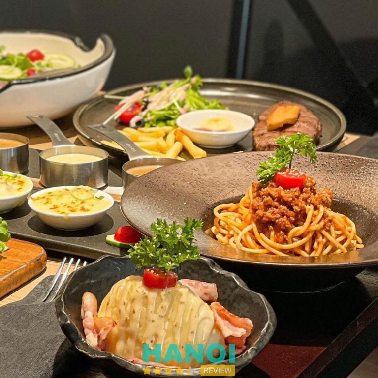
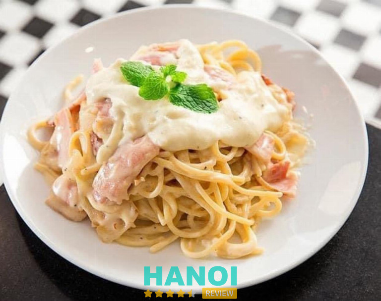
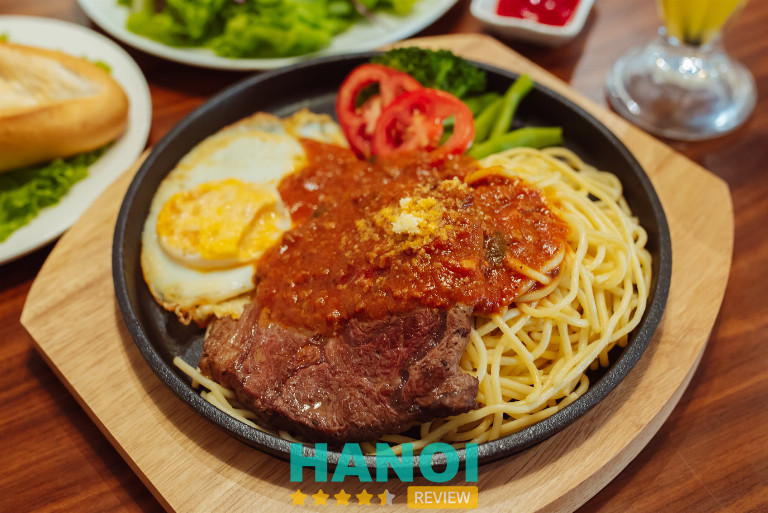
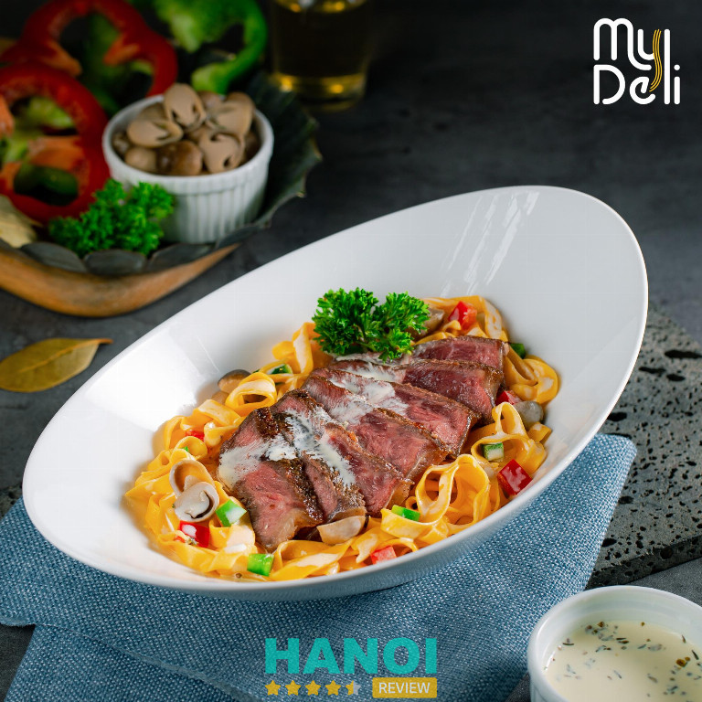
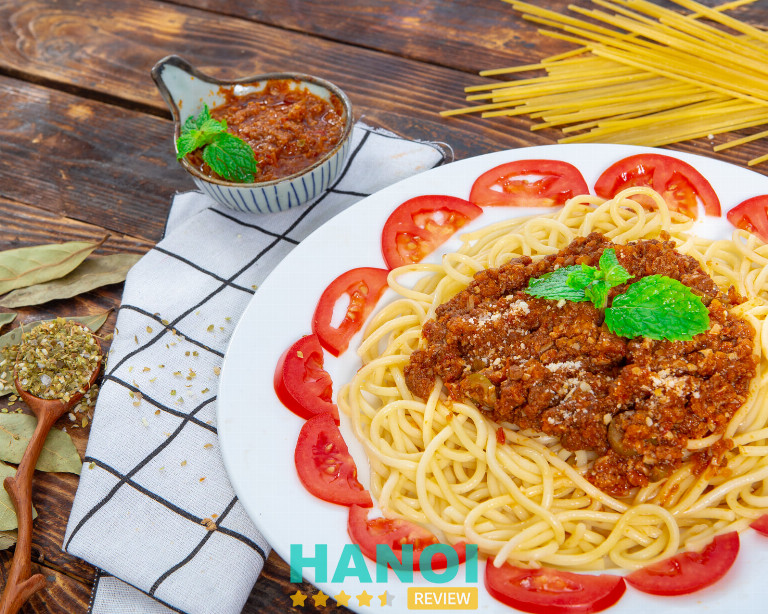

10 Quán mỳ Ý ở Hà Nội nổi tiếng, hương vị thơm ngon, giá hợp lý
Nếu bạn đang tìm quán mỳ Ý ở Hà Nội với hương vị hấp dẫn và giá cả phải chăng, đây là lựa chọn hoàn hảo. Những địa điểm này đảm bảo trải nghiệm ẩm thực đầy đủ chất lượng, không gian thoải mái và phục vụ tận tình, giúp bạn thưởng thức mỳ Ý ngon miệng ngay tại thủ đô.
Top 10 quán mỳ Ý tại Hà Nội được yêu thích nhất hiện nay
Những quán mỳ Ý ở Hà Nội này nổi bật với hương vị độc đáo, nguyên liệu tươi ngon và phong cách phục vụ chuyên nghiệp, đem đến trải nghiệm ẩm thực khó quên cho mọi khách hàng. Đây là địa điểm lý tưởng để thưởng thức món Ý chính hiệu.
Pepperonis – Ba Đình
Nếu bạn đang tìm một quán mỳ Ý ở Hà Nội với không gian rộng rãi, phục vụ thân thiện và món ăn chất lượng, Pepperonis chính là điểm đến lý tưởng. Thành lập từ năm 1997, Pepperonis đã tạo dựng được uy tín nhờ hương vị pizza đặc trưng, mỳ Ý chuẩn vị và đa dạng món ăn hấp dẫn khác.
Nằm ngay trung tâm thủ đô, quán dễ dàng tiếp cận và thường xuyên có các chương trình khuyến mãi hấp dẫn, giúp thực khách vừa thưởng thức ẩm thực vừa tiết kiệm chi phí.

Pepperonis sở hữu không gian thoáng đãng, hiện đại, phù hợp cho cả gia đình, nhóm bạn hay các buổi hẹn hò. Nhân viên phục vụ nhiệt tình, vui vẻ, luôn sẵn sàng hỗ trợ thực khách. Thời gian lên món nhanh chóng, bạn không phải chờ đợi lâu để thưởng thức những đĩa mỳ Ý thơm ngon.
Món ăn nổi bật:
Các món mỳ Ý tại Pepperonis luôn được chế biến tươi ngon, đa dạng phong cách:
- Spaghetti sốt phô mai – món best seller hấp dẫn
- Spaghetti sốt kem với thịt gà và nấm
- Spaghetti thịt bò xay và sốt cà chua
- Pizza nhiều loại topping tươi ngon
- Salad, khai vị hấp dẫn kèm nước sốt đặc trưng
Ngoài ra, Pepperonis còn thường xuyên thay đổi các món sốt spaghetti và pizza, mang đến trải nghiệm mới mẻ mỗi ngày cho thực khách.
Với hơn 25 năm kinh nghiệm trong lĩnh vực ẩm thực, Pepperonis khẳng định chất lượng và uy tín của mình. Dù là khách quen hay khách lần đầu, bạn đều được phục vụ tận tâm và thưởng thức những món mỳ Ý chuẩn vị. Nếu bạn đang tìm một quán mỳ Ý ở Hà Nội vừa ngon vừa đáng giá, Pepperonis là lựa chọn không thể bỏ qua.
Thông tin liên hệ:
- Địa chỉ: 114B2 Nguyễn Chí Thanh, Ba Đình, Hà Nội
- Điện thoại: 024 3771 0160
- Email: cs@afg.vn
- Website: pepperonis.com.vn
- Facebook: fb.com/pepperonisvietnam
Spaghettibox – Ba Đình
Spaghettibox là một trong những quán mỳ Ý ở Hà Nội uy tín, thành lập năm 2005. Nằm tại khu vực trung tâm Ba Đình, nhà hàng nổi bật với không gian rộng rãi, ấm cúng, phục vụ khách hàng những món mỳ Ý chuẩn vị.
Với hơn 18 năm kinh nghiệm trong ngành ẩm thực Ý, Spaghettibox luôn cam kết chất lượng nguyên liệu, hương vị món ăn và sự phục vụ chuyên nghiệp. Đây là địa điểm lý tưởng cho những ai muốn trải nghiệm ẩm thực Ý ngay tại Hà Nội.

Spaghettibox mang đến thực đơn đa dạng từ các món mỳ Ý, pizza đến beef-steak, tất cả được chế biến bởi đội ngũ đầu bếp giàu kinh nghiệm. Nhà hàng nổi bật nhờ:
- Chất lượng nguyên liệu: Tươi ngon, nhập khẩu chuẩn Ý, đảm bảo an toàn thực phẩm.
- Hương vị đặc trưng: Các món mỳ Ý giữ đúng hương vị truyền thống.
- Phục vụ chuyên nghiệp: Nhân viên thân thiện, nhiệt tình, sẵn sàng tư vấn.
- Không gian thoải mái: Rộng rãi, sạch sẽ, phù hợp cho cả gia đình hoặc nhóm bạn.
- Giá cả hợp lý: Món ăn chỉ từ 40.000 VNĐ, phù hợp với nhiều đối tượng.
Một số món mỳ Ý nổi bật:
- Spaghetti Tôm sú sốt tôm: 96.000 VNĐ
- Spaghetti Sốt Cá Hồi: 98.000 VNĐ
- Spaghetti Classic: 38.000 VNĐ
- Spaghetti Creamy Marinara: 57.000 VNĐ
- Spaghetti Papalina: 44.000 VNĐ
Spaghettibox là lựa chọn lý tưởng nếu bạn muốn thưởng thức mỳ Ý ở Hà Nội chuẩn vị, phục vụ chuyên nghiệp, không gian thoải mái và giá cả hợp lý. Hãy đến trải nghiệm để cảm nhận hương vị Ý thực thụ ngay hôm nay.
Thông tin liên hệ:
- Địa chỉ: 90 Ngõ Núi Trúc, Giang Văn Minh, Ba Đình, Hà Nội
- Điện thoại: 1900 636 516
- Email: spaghettibox@gmail.com
- Facebook: fb.com/spaghettibox
Capricciosa – Ba Đình
Capricciosa là quán mỳ Ý Hà Nội nổi bật với phong cách ẩm thực chuẩn Ý được chăm chút tỉ mỉ. Nằm ngay tại trung tâm thương mại Vincom Center Metropolis, nhà hàng mang đến không gian sang trọng, hài hòa giữa nét cổ điển và hiện đại.
Đầu bếp của Capricciosa với kinh nghiệm lâu năm, đặc biệt am hiểu văn hóa ẩm thực Ý, đảm bảo từng món ăn vừa ngon vừa giữ nguyên hương vị truyền thống. Đây là địa chỉ lý tưởng nếu bạn muốn thưởng thức mỳ Ý tại Hà Nội với trải nghiệm trọn vẹn từ không gian đến hương vị.

Spaghetti tại Capricciosa được chế biến công phu với nhiều loại nước sốt phong phú. Sợi mì mềm vừa, dai ngon, kết hợp cùng các nguyên liệu tươi như hải sản, thịt xông khói hay sốt kem béo ngậy, tạo nên trải nghiệm ẩm thực khó quên. Không gian nhà hàng ấm cúng, sang trọng, phù hợp cho cả bữa ăn gia đình, gặp gỡ bạn bè hay hẹn hò. Đầu bếp người Nhật tại Capricciosa luôn đảm bảo món ăn không chỉ đẹp mắt mà còn thơm ngon, giữ nguyên hương vị Ý truyền thống.
Một số món mỳ Ý nổi bật tại Capricciosa:
- Spaghetti cá hồi sốt kem – 209.000 VNĐ
- Spaghetti nấu sốt mực đặc biệt – 159.000 VNĐ
- Spaghetti với ngao nấu sốt rượu vang trắng – 109.000 VNĐ
- Spaghetti nấu với thịt xông khói và sốt kem – 159.000 VNĐ
- Spaghetti sốt cà chua, tỏi cắt lát và ớt – 139.000 VNĐ
Capricciosa không chỉ là quán mỳ Ý Hà Nội uy tín mà còn là điểm đến mang đến trải nghiệm ẩm thực Ý chân thực. Nếu bạn đang tìm kiếm một địa chỉ thưởng thức mỳ Ý tinh tế, Capricciosa chắc chắn sẽ làm bạn hài lòng.
Thông tin liên hệ:
- Địa chỉ: Tầng L3, Vincom Center Metropolis, 29 Liễu Giai, Ba Đình, Hà Nội
- Điện thoại: 1900 234 546
- Email: marketing.hn@goldsunfood.vn
- Website: capricciosa.vn
- Facebook: fb.com/CapricciosaVietnam
Paolo & Chi – Tây Hồ
Paolo & Chi là một trong những quán mỳ Ý ở Hà Nội được nhiều thực khách yêu thích. Tọa lạc tại 284 Nghi Hàm, quán nổi bật với không gian mang phong cách Ý, vừa ấm cúng, vừa sang trọng, tạo cảm giác thoải mái cho mọi khách hàng.
Ra mắt từ năm 2011, đơn vị đã có hơn 12 năm kinh nghiệm trong lĩnh vực ẩm thực, khẳng định uy tín và chất lượng. Với đội ngũ nhân viên được đào tạo chuyên nghiệp, thân thiện và nhiệt tình, Paolo & Chi mang đến trải nghiệm ẩm thực Ý chuẩn vị ngay giữa lòng thủ đô.

Paolo & Chi đặc trưng với các món mỳ Ý được chế biến công phu, từ nước sốt đậm đà theo công thức riêng đến sợi mỳ vừa dai vừa mềm. Thực khách khi đến đây không chỉ được thưởng thức các món mỳ hấp dẫn mà còn có thể trải nghiệm các loại rượu vang đặc sắc. Quán mở cửa từ thứ 2 đến thứ 6 (16:00 – 02:00) và thứ 7, chủ nhật (11:00 – 14:00 & 16:00 – 02:00), phù hợp cho những buổi hẹn hò, gặp gỡ bạn bè hay ăn tối gia đình.
Một số món ăn được yêu thích tại Paolo & Chi:
- Cheese Platter
- Cold Cut Platter
- Salmon Pizza
- Parma Ham Pizza
- Spaghetti Carbonara
- Ribeye Steak
- Salmon Steak
Paolo & Chi luôn đặt chất lượng và trải nghiệm khách hàng lên hàng đầu, khẳng định vị thế là một trong những quán mỳ Ý ngon ở Hà Nội mà bạn không nên bỏ lỡ. Hãy ghé thăm quán để thưởng thức những món ăn hấp dẫn, tận hưởng không gian tinh tế và dịch vụ chuyên nghiệp.
Thông tin liên hệ:
- Địa chỉ: 48 Hàng Buồm, Hoàn Kiếm, Hà Nội
- Điện thoại: 0924 681 986
- Facebook: fb.com/Paolo.and.ChiPizzeriaOldQuarter
Botanica – Ba Đình
Botanica là quán mỳ Ý Hà Nội được nhiều thực khách thủ đô yêu thích nhờ không gian tinh tế, sang trọng cùng ánh sáng vàng ấm áp, tạo cảm giác gần gũi và thoải mái. Nằm ngay trung tâm quận Ba Đình, Botanica nổi bật với đội ngũ đầu bếp giàu kinh nghiệm, luôn tỉ mỉ trong việc chế biến và trình bày các món mỳ Ý.
Quán vừa mang hương vị chuẩn Ý, vừa được điều chỉnh phù hợp với khẩu vị Việt, là điểm đến lý tưởng cho những buổi hẹn hò lãng mạn hay sum họp gia đình. Đây là địa chỉ đáng tin cậy cho những ai đang tìm quán mỳ Ý Hà Nội ngon, chất lượng.

Quán gây ấn tượng với thiết kế hiện đại, sang trọng, hệ thống đèn ánh sáng vàng tạo cảm giác ấm cúng. Đội ngũ nhân viên thân thiện, chuyên nghiệp luôn sẵn sàng tư vấn món ăn và phục vụ chu đáo. Botanica chú trọng lựa chọn nguyên liệu tươi ngon, đảm bảo chất lượng cho từng món mỳ Ý, từ sốt cà chua tươi đến thịt, hải sản và các loại gia vị nhập khẩu, giúp món ăn vừa hấp dẫn vừa an toàn cho sức khỏe thực khách.
Menu các món mỳ Ý nổi bật tại Botanica:
- Mỳ Ý sốt bò băm – 80.000 VNĐ
- Mỳ Ý sốt kem thịt nguội – 126.000 VNĐ
- Mỳ Ý sốt bò băm ăn kèm lườn gà chiên – 95.000 VNĐ
- Mỳ Ý hải sản sốt kem – 146.000 VNĐ
- Mỳ Ý sốt bò băm ăn kèm bò nướng BBQ – 146.000 VNĐ
Lý do chọn Botanica:
- Hương vị chuẩn Ý nhưng phù hợp khẩu vị Việt
- Không gian sang trọng, thoải mái, thích hợp hẹn hò và tụ họp
- Đội ngũ đầu bếp và nhân viên chuyên nghiệp, thân thiện
- Nguyên liệu tươi ngon, đảm bảo chất lượng món ăn
Đến với Botanica – quán mỳ Ý Hà Nội, bạn sẽ được thưởng thức món mì Ý “chuẩn vị Ý – đúng gu Việt” trong không gian ấm cúng và dịch vụ chu đáo. Đây thực sự là điểm đến uy tín để trải nghiệm ẩm thực Ý ngay giữa thủ đô.
Thông tin liên hệ:
- Địa chỉ: 116/D4 Giảng Võ, Ba Đình, Hà Nội
- Điện thoại: 0963 615 086
- Email: botanica.cskh@gmail.com
- Website: botanicavietnam.com
- Facebook: fb.com/botanica.vietnam
La Grupa Steak House – Đống Đa
La Grupa Steak House là một trong những quán mỳ Ý ở Hà Nội được nhiều thực khách yêu thích nhờ chất lượng dịch vụ chuyên nghiệp và không gian ẩm thực sang trọng. Tọa lạc ngay tại số 148 Trung Liệt, quận Đống Đa, nhà hàng là điểm đến lý tưởng cho các buổi gặp mặt gia đình, hẹn hò lãng mạn hay những cuộc trò chuyện thân mật.
Với kiến trúc tối giản, đồ nội thất gỗ sồi và sức chứa hàng trăm người, La Grupa Steak House mang đến trải nghiệm thưởng thức mỳ Ý đậm đà, đúng chuẩn Ý giữa lòng thủ đô.

Nhà hàng nổi bật với đội ngũ đầu bếp chuyên nghiệp, tay nghề cao, luôn mang đến những món mỳ Ý thơm ngon và hấp dẫn. Bạn sẽ được thưởng thức:
- Mỳ Ý sốt bò bằm đậm đà, hương vị tinh tế
- Mỳ Ý sốt kem với thịt nguội mềm mại, béo ngậy
- Mỳ Ý cá hồi sốt kem tươi ngon, thơm lừng
- Các món ăn đi kèm khác và lựa chọn rượu vang cao cấp, làm bữa ăn thêm phần hoàn hảo
Nhà hàng còn có không gian rộng rãi, sức chứa lớn, phục vụ nhiệt tình, vui vẻ và giá cả hợp lý, dao động từ 49.000 – 149.000 đồng/món, phù hợp với nhiều đối tượng khách hàng.
Lý do bạn nên chọn La Grupa Steak House:
- Không gian sang trọng, rộng rãi
- Menu đa dạng, phong phú
- Đội ngũ đầu bếp lành nghề
- Nhân viên phục vụ nhiệt tình, hiếu khách
- Giá cả hợp lý, dễ tiếp cận
La Grupa Steak House là địa điểm uy tín, chất lượng để trải nghiệm mỳ Ý ở Hà Nội. Hãy đến thưởng thức và cảm nhận hương vị Ý chân thực giữa lòng thủ đô!
Thông tin liên hệ:
- Địa chỉ: 148 Trung Liệt, Đống Đa, Hà Nội
- Điện thoại: 024 3224 7879
- Email: lagrupasteakhouse@gmail.com
- Facebook: fb.com/Lagrupasteak
Luna Steak – Ba Đình
Nếu bạn đang tìm kiếm một quán mỳ Ý ở Hà Nội vừa ngon vừa giá cả hợp lý, Luna Steak chắc chắn là lựa chọn không thể bỏ qua. Nằm tại vị trí thuận tiện trên đường Đội Cấn, quán gây ấn tượng với không gian tinh tế, sang trọng nhờ tông màu đen trắng chủ đạo.
Luna Steak nổi bật nhờ kinh nghiệm phục vụ nhiều năm, đội ngũ nhân viên nhiệt tình và chị chủ quán thân thiện, luôn sẵn sàng tư vấn để bạn lựa chọn món ăn phù hợp. Đây là địa chỉ lý tưởng cho những buổi ăn trưa, hẹn hò hay tụ tập bạn bè.

Quán mỳ Ý ở Hà Nội này ghi điểm với thiết kế nội thất hiện đại, tạo cảm giác thoải mái khi thưởng thức món ăn. Lần đầu đến quán, bạn sẽ được nhân viên nhiệt tình hướng dẫn lựa chọn món, giúp tiết kiệm thời gian và trải nghiệm trọn vẹn. Chất lượng phục vụ, sự chu đáo và thân thiện của đội ngũ nhân viên là điểm mạnh giúp Luna Steak được nhiều thực khách đánh giá cao.
Thực đơn đặc sắc tại Luna Steak:
- Mỳ Ý sốt thịt bò bằm: 65.000 – 85.000 VNĐ
- Mỳ Ý với hải sản: 90.000 – 115.000 VNĐ
- Mỳ bò củ quả: 75.000 – 95.000 VNĐ
- Mỳ Ý xào tỏi: 40.000 – 60.000 VNĐ
- Mỳ Ý cá hồi sốt phomai: 130.000 VNĐ
- Mỳ Ý cá basa sốt phomai: 80.000 – 100.000 VNĐ
Các món ăn kèm như khoai tây chiên, khoai tây nghiền, trứng ốp la hay bánh mì bơ tỏi cũng rất được ưa chuộng. Lưu ý, khách không được mang đồ ăn, đồ uống bên ngoài vào quán; nếu mang vào sẽ tính phí 20% giá nhà hàng.
Với chất lượng món ăn tuyệt hảo, không gian hiện đại và đội ngũ phục vụ tận tâm, Luna Steak xứng đáng là quán mỳ Ý ở Hà Nội được nhiều thực khách lựa chọn. Hãy ghé thăm để trải nghiệm những món Ý chuẩn vị và dịch vụ chuyên nghiệp ngay hôm nay!
Thông tin liên hệ:
- Địa chỉ: 236 Đội Cấn, Ba Đình, Hà Nội
- Điện thoại: 0914 362 182
- Facebook: fb.com/lunasteak
Quán Phố – Mỳ Ý Chảo – Tây Hồ
Quán Phố – Mỳ Ý Chảo là địa chỉ ẩm thực nổi bật tại Tây Hồ, Hà Nội, chuyên phục vụ các món ăn Á – Âu và đặc biệt là mỳ Ý chảo cùng bò bít tết nóng hổi. Nằm tại 57 Xuân La, quán thu hút thực khách nhờ không gian thoải mái, phục vụ nhanh nhẹn và chất lượng món ăn ổn định. Từ lâu, Quán Phố khẳng định uy tín trong lòng người dân địa phương. Đây là lựa chọn lý tưởng cho những ai muốn thưởng thức mỳ Ý chuẩn vị ngay tại Hà Nội.

Quán Phố gây ấn tượng với khu vực chỗ ngồi ngoài trời thoáng đãng, phù hợp cho cả gia đình và nhóm bạn. Quán luôn đảm bảo đồ ăn phục vụ nhanh chóng, nóng hổi, từ mỳ Ý dai ngon đến trứng ốp lòng đào và bò bít tết chuẩn vị. Đội ngũ nhân viên thân thiện, nhiệt tình góp phần mang đến trải nghiệm ẩm thực trọn vẹn cho thực khách.
Thực đơn nổi bật:
- Mỳ Ý chảo với sốt đa dạng và topping phong phú
- Bò bít tết chảo nóng hổi, mềm thơm
- Trứng ốp lòng đào chuẩn vị
- Các món Á – Âu khác, kết hợp gia vị vừa miệng
- Đồ uống, nước giải khát tươi mát
Với mức giá tầm trung, Quán Phố đáp ứng nhu cầu thưởng thức món ngon mà không lo về chi phí. Khách hàng đánh giá cao và thường xuyên đề xuất quán, điều này minh chứng cho chất lượng và dịch vụ đáng tin cậy. Đây thực sự là địa điểm phù hợp cho những buổi ăn tại nhà hàng, tụ tập bạn bè hay bữa trưa nhanh gọn nhưng vẫn chuẩn vị.
Thông tin liên hệ:
- Địa chỉ: 57 Xuân La, Tây Hồ, Hà Nội, Việt Nam
- Điện thoại: 0914 461 525
- Facebook: fb.com/quanphomyychao
MyDeli – Hoàn Kiếm
Nếu bạn đang tìm một quán mỳ Ý Hà Nội ngon, giá cả phải chăng và chất lượng đảm bảo thì MyDeli là lựa chọn không thể bỏ qua. Nằm tại trung tâm quận Hoàn Kiếm, MyDeli đã tạo được uy tín với thực khách nhờ vào chất lượng nguyên liệu tươi, chế biến trực tiếp tại quán và không gian ấm cúng, gần gũi.
Quán mở cửa từ 10:00 – 14:00 và 17:00 – 22:30, riêng cuối tuần phục vụ cả ngày, mang đến trải nghiệm ăn uống linh hoạt cho mọi khách hàng. Với kinh nghiệm chế biến các món Ý chuẩn vị, MyDeli mang đến sự hài lòng về hương vị cũng như an toàn thực phẩm.

Điểm nổi bật của MyDeli là các món mỳ Ý được làm hoàn toàn homemade trong ngày, sợi mỳ mềm, dai vừa phải kết hợp nước sốt đặc biệt tạo nên hương vị chuẩn Ý. Quán cũng phục vụ pizza nướng vừa nhiệt, topping đa dạng và đế bánh mỏng, phô mai phủ đều mang đến trải nghiệm truyền thống nhưng không kém phần hấp dẫn. Mỗi món ăn tại đây đều được chăm chút kỹ lưỡng từ nguyên liệu đến trình bày, đảm bảo chất lượng và an toàn cho sức khỏe thực khách.
Danh sách món ăn nổi bật tại MyDeli:
- Mỳ Ý sốt bò băm, sốt hải sản
- Mỳ Ý sốt kem nấm, sốt pesto
- Pizza đế mỏng phô mai, topping thịt và rau củ
- Các món khai vị và salad tươi ngon
- Thức uống kèm theo: nước ép trái cây, soda, trà thảo mộc
Đến với MyDeli, bạn sẽ được trải nghiệm những món ăn chuẩn vị Ý ngay tại Hà Nội, với mức giá hợp lý từ 75.000 – 135.000 VNĐ. Quán uy tín, đội ngũ nhân viên thân thiện, không gian thoáng mát và ấm cúng, rất phù hợp cho cả gia đình, nhóm bạn hay hẹn hò. Hãy ghé MyDeli để thưởng thức mỳ Ý và pizza ngon lành, cảm nhận sự tỉ mỉ trong từng món ăn.
Thông tin liên hệ:
- Địa chỉ: 75 Thợ Nhuộm, Hoàn Kiếm, Hà Nội
- Điện thoại: 0886 808 282
- Facebook: fb.com/mydeli.vietnam
Sốt Mỳ Ý Madam Lan’s – Cầu Giấy
Sốt Mỳ Ý Madam Lan’s là một trong những quán mỳ Ý ở Hà Nội được nhiều thực khách yêu thích. Nằm ngay tại ngõ 36 Dịch Vọng Hậu, quán dễ tìm, không gian ấm cúng, trang trí tinh tế và gần gũi. Với nhiều năm phục vụ ẩm thực Ý tại Hà Nội, Sốt Mỳ Ý Madam Lan’s đã khẳng định uy tín nhờ chất lượng món ăn ngon, giá cả hợp lý và dịch vụ chuyên nghiệp. Đây là địa chỉ lý tưởng cho những ai muốn trải nghiệm hương vị mỳ Ý chuẩn vị mà vẫn phù hợp với khẩu vị Việt.

Quán mang đến trải nghiệm ẩm thực trọn vẹn nhờ sự kết hợp hài hòa giữa không gian, chất lượng món ăn và phong cách phục vụ. Nội thất ấm áp, nhân viên thân thiện và nhiệt tình khiến khách hàng cảm thấy thoải mái từ khi bước vào. Thực đơn đa dạng, phong phú với các món mỳ Ý hấp dẫn, từ spaghetti sốt bò bằm, mỳ Ý hải sản đến các loại mỳ kèm phô mai và nước sốt đặc trưng.
Điểm nổi bật:
- Sợi mỳ được nấu vừa tới, giữ độ dai và mềm, hòa quyện với nước sốt đậm đà.
- Nước sốt thơm ngon, chế biến từ nguyên liệu tươi sạch, thể hiện sự khéo léo của đầu bếp.
- Giá cả phải chăng, dao động từ 50.000 – 150.000 VNĐ.
- Quán mở cửa từ 6:00 – 22:00 tất cả các ngày trong tuần.
- Không gian thích hợp cho cả gia đình, bạn bè và hẹn hò lãng mạn.
Sốt Mỳ Ý Madam Lan’s là lựa chọn đáng tin cậy nếu bạn đang tìm quán mỳ Ý ở Hà Nội ngon, giá hợp lý và phục vụ tận tâm. Đến đây, thực khách sẽ được thưởng thức những món mỳ chuẩn vị Ý trong không gian gần gũi, ấm cúng.
Thông tin liên hệ:
- Địa chỉ: 136 Ngõ 36 Dịch Vọng Hậu, Cầu Giấy, Hà Nội
- Số điện thoại: 0961 446 262
- Facebook: fb.com/madamlans
Tiêu chí chọn quán mỳ Ý ngon, chất lượng ở Hà Nội
Để chọn được quán mỳ Ý phù hợp, khách hàng cần lưu ý một số vấn đề:
- Chất lượng nguyên liệu: Nguyên liệu tươi ngon, nhập khẩu chính hãng, đảm bảo món mỳ Ý ở Hà Nội vừa ngon vừa an toàn cho sức khỏe.
- Hương vị chuẩn Ý: Mỳ, sốt và các món kèm đều được chế biến đúng chuẩn Ý, mang đến trải nghiệm ẩm thực tuyệt vời tại quán mỳ Ý ở Hà Nội.
- Không gian thoải mái: Nhà hàng, quán ăn rộng rãi, sạch sẽ, decor đẹp mắt, tạo cảm giác thư giãn khi thưởng thức mỳ Ý.
- Phục vụ chuyên nghiệp: Nhân viên thân thiện, nhiệt tình, sẵn sàng tư vấn và đáp ứng nhu cầu khách hàng, nâng cao trải nghiệm tại quán mỳ Ý ở Hà Nội.
- Giá cả hợp lý: Mức giá vừa phải, phù hợp ngân sách đa dạng, đảm bảo bạn thưởng thức món ngon mà không lo về chi phí.
- Đa dạng thực đơn: Các loại mỳ Ý, pizza và món kèm phong phú, giúp khách hàng thoải mái lựa chọn theo sở thích.
- Đánh giá từ khách hàng: Được nhiều thực khách đánh giá cao về chất lượng và dịch vụ, giúp bạn yên tâm khi lựa chọn quán mỳ Ý ở Hà Nội.
Những quán mỳ Ý ở Hà Nội mang đến trải nghiệm ẩm thực tuyệt vời, hương vị chuẩn Ý, phục vụ chuyên nghiệp và không gian thoải mái. Hãy ghé thử để cảm nhận hương vị thơm ngon, đảm bảo hài lòng từ lần đầu thưởng thức.
Có thể bạn quan tâm
- 11 Nhà hàng Ấn Độ ở Hà Nội mang hương vị chuẩn, giá cả hợp lý
- 10 Quán Bingsu ở Hà Nội mát lạnh, thưởng thức cực đã
- 13 Quán cà phê bánh ở Hà Nội nổi bật, trải nghiệm ngon khó quên
- 9 Quán Pub rẻ ở Hà Nội hút khách không thể bỏ qua
DOANH NGHIỆP: Đăng tải thông tin MIỄN PHÍ.
Tin đọc nhiều


Trở thành người đầu tiên bình luận cho bài viết này!